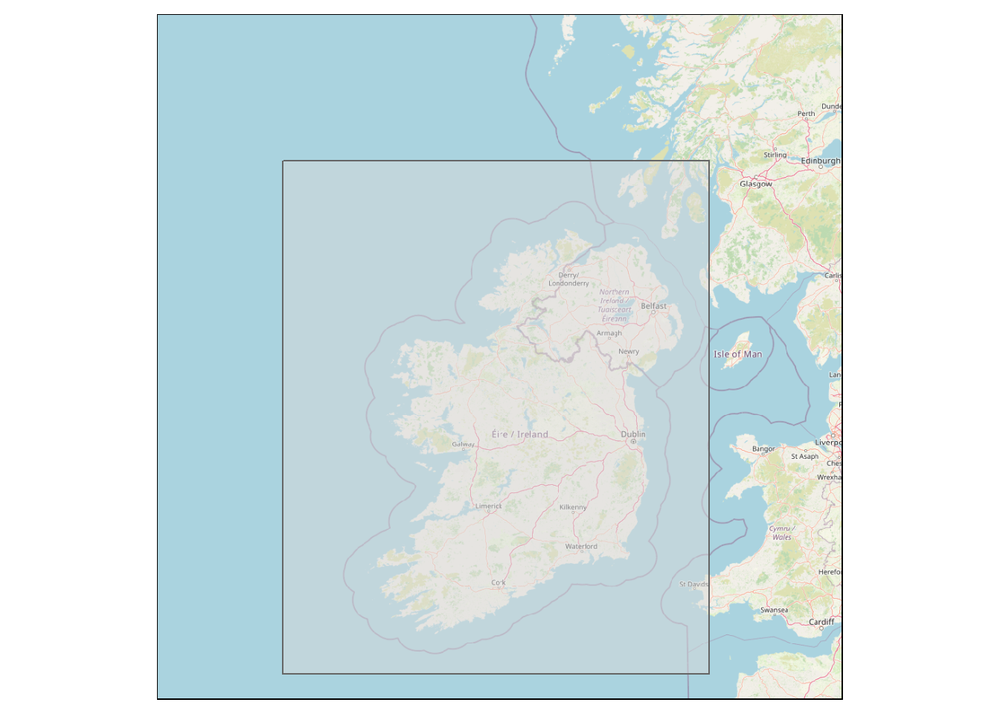

First I download all the libraries I’ll need
library(tmap)## Registered S3 methods overwritten by 'stars':
## method from
## st_bbox.SpatRaster sf
## st_crs.SpatRaster sf## The legacy packages maptools, rgdal, and rgeos, underpinning the sp package,
## which was just loaded, will retire in October 2023.
## Please refer to R-spatial evolution reports for details, especially
## https://r-spatial.org/r/2023/05/15/evolution4.html.
## It may be desirable to make the sf package available;
## package maintainers should consider adding sf to Suggests:.
## The sp package is now running under evolution status 2
## (status 2 uses the sf package in place of rgdal)library(leaflet)## Warning: package 'leaflet' was built under R version 4.1.3library(sf)## Linking to GEOS 3.10.2, GDAL 3.4.1, PROJ 7.2.1; sf_use_s2() is TRUElibrary(dplyr)## Warning: package 'dplyr' was built under R version 4.1.3##
## Attaching package: 'dplyr'## The following objects are masked from 'package:stats':
##
## filter, lag## The following objects are masked from 'package:base':
##
## intersect, setdiff, setequal, unionlibrary(DT)
library(geojsonsf)## Warning: package 'geojsonsf' was built under R version 4.1.3library(osmdata)## Data (c) OpenStreetMap contributors, ODbL 1.0. https://www.openstreetmap.org/copyrightlibrary(rosm)
library(httr)I create a bounding box around Ireland and make sure that it fits with a tmap plot.
lats = c(56, 56, 51, 51)
lons = c(-12, -5, -5, -12)
# Create a data frame with coordinates
coordinates = data.frame(lat = lats, lon = lons)
# Convert to sf object and create a polygon
coordinates_sf = coordinates %>%
st_as_sf(coords = c("lon", "lat"), crs = 4326) %>%
summarise(geometry = st_combine(geometry)) %>%
st_cast("POLYGON")
# Plot to check
tm_shape(osm.raster(coordinates_sf)) +
tm_rgb() +
tm_shape(coordinates_sf) +
tm_polygons(alpha = 0.5)## Zoom: 7## stars object downsampled to 1000 by 1000 cells. See tm_shape manual (argument raster.downsample)
I feed the bounding box into one of the Neotoma APIs to return all the sites in that location. And I turn that into a dataframe.
coord_json = sf_geojson(coordinates_sf)
sites = content(GET(paste0("https://api.neotomadb.org/v2.0/data/sites?loc=",coord_json,"&limit=9999&offset=0")))$data
idx = 0
for (i in seq(length(sites))) {
for (j in seq(length(sites[[i]]$collectionunits))) {
for (k in seq(length(sites[[i]]$collectionunits[[j]]$datasets))) {
idx = idx + 1
}
}
}
sites_mat = matrix(nrow=idx,ncol=11)
idx2 = 0
for (i in seq(length(sites))) {
for (j in seq(length(sites[[i]]$collectionunits))) {
for (k in seq(length(sites[[i]]$collectionunits[[j]]$datasets))) {
idx2 = idx2 + 1
for (m in seq(5)) {
if (!is.null(sites[[i]][[m]])) {
sites_mat[[idx2, m]] = sites[[i]][[m]]
}
}
if (!is.null(sites[[i]]$collectionunits[[j]]$handle)) {
sites_mat[[idx2,6]] = sites[[i]]$collectionunits[[j]]$handle
}
if (!is.null(sites[[i]]$collectionunits[[j]]$collectionunit)) {
sites_mat[[idx2,7]] = sites[[i]]$collectionunits[[j]]$collectionunit
}
if (!is.null(sites[[i]]$collectionunits[[j]]$collectionunitid)) {
sites_mat[[idx2,8]] = sites[[i]]$collectionunits[[j]]$collectionunitid
}
if (!is.null(sites[[i]]$collectionunits[[j]]$collectionunittype)) {
sites_mat[[idx2,9]] = sites[[i]]$collectionunits[[j]]$collectionunittype
}
if (!is.null(sites[[i]]$collectionunits[[j]]$dataset[[k]]$datasetid)) {
sites_mat[[idx2,10]] = sites[[i]]$collectionunits[[j]]$dataset[[k]]$datasetid
}
if (!is.null(sites[[i]]$collectionunits[[j]]$dataset[[k]]$datasettype)) {
sites_mat[[idx2,11]] = sites[[i]]$collectionunits[[j]]$dataset[[k]]$datasettype
}
}
}
}
sites_ir_df = as.data.frame(sites_mat)
names(sites_ir_df) = c("siteid","sitename","sitedescription","geography","altitude","handle","collectionunit","collectionunitid","collectionunittype","datasetid","datasettype")
sites_ir_sf = geojson_sf(sites_ir_df$geography) %>% cbind(sites_ir_df)
datasetids = sites_ir_df %>% dplyr::distinct(datasetid)
#datasets_neo = get_datasets(as.numeric(datasetids$datasetid),all_data=TRUE)
#data = samples(get_downloads(datasets_neo,all_data=TRUE))
datatable(sites_ir_df,rownames=FALSE)sites_ir_sf_unique = sites_ir_sf %>% distinct(siteid,.keep_all=TRUE)
pointSites = sites_ir_sf_unique[st_geometry_type(sites_ir_sf_unique) == "POINT",]
polySites = sites_ir_sf_unique[st_geometry_type(sites_ir_sf_unique) == "POLYGON",]
leaflet() %>%
addTiles() %>%
addPolygons(data = polySites,
color = "red",
weight = 5,
fillColor = "orange",
fillOpacity = 0.35,
popup = ~sitename) %>%
addCircleMarkers(data = pointSites,
radius = 5,
color = "blue",
fillColor = "blue",
fillOpacity = 0.2,
stroke = FALSE,
popup = ~sitename)There are 106 sites in Ireland in Neotoma, associated with 322 datasets. Below I count them by dataset type.
sites_ir_df %>% group_by(datasettype) %>% count() %>% arrange(desc(n)) %>% datatable(rownames=FALSE)Next I use a different API to grab the oldest and youngest year associated with each dataset. In Neotoma, a single site can be associated with multiple datasets, which have types like pollen, charcoal, cladocera…
site_string = paste0(distinct(sites_ir_sf_unique,siteid)$siteid, collapse=",")
returns = content(GET(paste0("https://api.neotomadb.org/v2.0/data/sites/",site_string,"/datasets?limit=2000")))$data
idx=0
for (i in seq(length(returns))) {
for (j in seq(length(returns[[i]]$site$datasets))) {
idx = idx +1
}
}
oldyoung_mat = matrix(nrow=idx,ncol=4)
idx = 0
for (i in seq(length(returns))) {
for (j in seq(length(returns[[i]]$site$datasets))) {
idx = idx + 1
if (!is.null(returns[[i]]$site$datasets[[j]]$agerange[[1]]$units)) {
oldyoung_mat[[idx,1]] = returns[[i]]$site$datasets[[j]]$agerange[[1]]$units}
if (!is.null(returns[[i]]$site$datasets[[j]]$agerange[[1]]$ageold)) {
oldyoung_mat[[idx,2]] = returns[[i]]$site$datasets[[j]]$agerange[[1]]$ageold}
if (!is.null(returns[[i]]$site$datasets[[j]]$agerange[[1]]$ageyoung)) {
oldyoung_mat[[idx,3]] = returns[[i]]$site$datasets[[j]]$agerange[[1]]$ageyoung}
if (!is.null(returns[[i]]$site$datasets[[j]]$datasetid)) {
oldyoung_mat[[idx,4]] = returns[[i]]$site$datasets[[j]]$datasetid}
}
}
oldyoung_df = as.data.frame(oldyoung_mat)
names(oldyoung_df) = c("units","old","young","datasetid")
oldyoung_df = oldyoung_df %>% dplyr::mutate(datasetid = as.character(datasetid))I download the publication tables. Datasetpublications links datasetids and publicationids, while publications has metadata for any given publication. In Neotoma, there is a many-to-many relationship between datasets and publications: many datasets can be associated with a particular publication, and vice versa.
tables = c("datasetpublications","publications")
for (i in seq(length(tables))) {
table = tables[[i]]
list = content(GET(paste0("https://api.neotomadb.org/v2.0/data/dbtables?table=",table,"&limit=75000&offset=0")))$data
if (table != "publications") {
df = matrix(nrow=length(list),ncol=length(list[[1]]))
for (j in seq(1,length(list))) {
for (k in seq(length(list[[1]]))) {
if (!is.null(list[[j]][[k]])) {
df[j,k] = list[[j]][[k]]
}
}
}
df = as.data.frame(df)
names(df) = names(list[[1]]) } else {
df = matrix(nrow=length(list),ncol=(length(list[[1]])-2))
for (j in seq(1,length(list))) {
for (k in seq((length(list[[1]])-2))) {
if (!is.null(list[[j]][[k]])) {
df[j,k] = list[[j]][[k]]
}
}
}
df = as.data.frame(df)
names(df) = names(list[[1]][1:(length(list[[1]])-2)]) }
assign(paste0(table,"_df"), df)
}I join all my different metadata together. Before I do that, I grab the x/y version of the coordinates instead of the sf version, which doesn’t render well in tables. Because of the one-to-many and many-to-many relationships among Neotoma tables, there are a lot of records in the below data table. But only about 100 Neotoma sites in Ireland, associated with about 300 datasets, and 64 publications. (And of those 300ish datasets, 62 are geochronologic type, which is a little artifactual, but I’m including it below for completeness.)
coords_polycenter = st_coordinates(st_centroid(polySites)) %>% cbind(st_drop_geometry(polySites))## Warning: st_centroid assumes attributes are constant over geometriescoords_pointcenter = st_coordinates(pointSites) %>% cbind(st_drop_geometry(pointSites))
all_coords_df = rbind(coords_polycenter,coords_pointcenter)
joiner = sites_ir_df %>% left_join(datasetpublications_df, by=join_by(datasetid)) %>% left_join(publications_df, by=join_by(publicationid)) %>% left_join(oldyoung_df, by=join_by(datasetid)) %>% left_join(all_coords_df)## Warning in left_join(., datasetpublications_df, by = join_by(datasetid)): Each row in `x` is expected to match at most 1 row in `y`.
## i Row 6 of `x` matches multiple rows.
## i If multiple matches are expected, set `multiple = "all"` to silence this
## warning.## Joining with `by = join_by(siteid, sitename, sitedescription, geography,
## altitude, handle, collectionunit, collectionunitid, collectionunittype,
## datasetid, datasettype)`ask = joiner %>% select(c(publicationid, citation, sitename, X,Y, altitude, datasettype,old,young, units))
datatable(ask,rownames=FALSE)